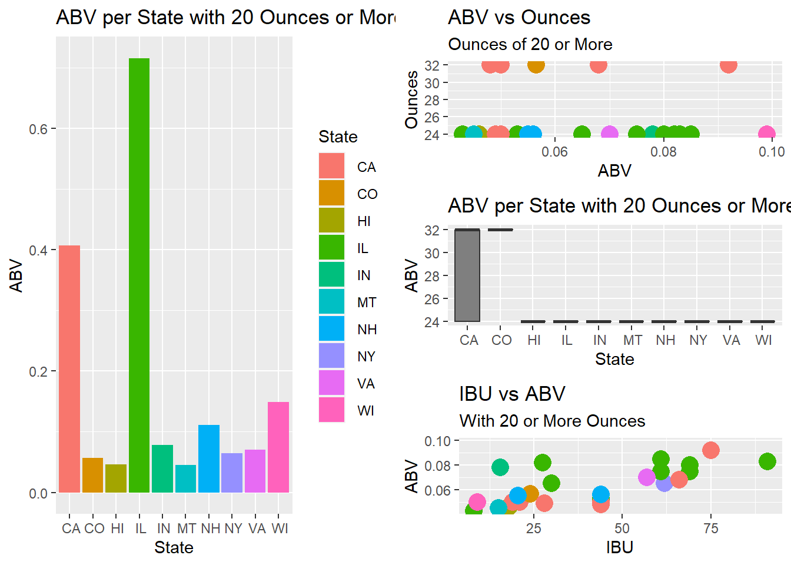

Case Study 01 EDA Beers_Breweries
Jeremy Dawkins
10/21/2021
#Hello, The purpose of this code is to explain what possible ways as a company for Budweiser can improve business in certain regional regions and/or possible provide new goods and services where the market is has untapped potential.
#I am hoping my code below can answer some of your questions on how this data allowed us to make an informed decision on what’s the next big source of revenue.
#Load Library that will be in use for this project
#We want to read in our data set from the beers.csv and the breweries.csv
## Name Beer_ID ABV IBU Brewery_id
## 1 Pub Beer 1436 0.050 NA 409
## 2 Devil's Cup 2265 0.066 NA 178
## 3 Rise of the Phoenix 2264 0.071 NA 178
## 4 Sinister 2263 0.090 NA 178
## 5 Sex and Candy 2262 0.075 NA 178
## Style Ounces
## 1 American Pale Lager 12
## 2 American Pale Ale (APA) 12
## 3 American IPA 12
## 4 American Double / Imperial IPA 12
## 5 American IPA 12## Brew_ID Name City State
## 1 1 NorthGate Brewing Minneapolis MN
## 2 2 Against the Grain Brewery Louisville KY
## 3 3 Jack's Abby Craft Lagers Framingham MA
## 4 4 Mike Hess Brewing Company San Diego CA
## 5 5 Fort Point Beer Company San Francisco CA## 'data.frame': 2410 obs. of 7 variables:
## $ Name : Factor w/ 2305 levels "#001 Golden Amber Lager",..: 1638 577 1705 1842 1819 268 1160 758 1093 486 ...
## $ Beer_ID : int 1436 2265 2264 2263 2262 2261 2260 2259 2258 2131 ...
## $ ABV : num 0.05 0.066 0.071 0.09 0.075 0.077 0.045 0.065 0.055 0.086 ...
## $ IBU : int NA NA NA NA NA NA NA NA NA NA ...
## $ Brewery_id: int 409 178 178 178 178 178 178 178 178 178 ...
## $ Style : Factor w/ 100 levels "","Abbey Single Ale",..: 19 18 16 12 16 80 18 22 18 12 ...
## $ Ounces : num 12 12 12 12 12 12 12 12 12 12 ...## 'data.frame': 558 obs. of 4 variables:
## $ Brew_ID: int 1 2 3 4 5 6 7 8 9 10 ...
## $ Name : chr "NorthGate Brewing " "Against the Grain Brewery" "Jack's Abby Craft Lagers" "Mike Hess Brewing Company" ...
## $ City : chr "Minneapolis" "Louisville" "Framingham" "San Diego" ...
## $ State : chr " MN" " KY" " MA" " CA" ...## Name Beer_ID ABV
## Nonstop Hef Hop : 12 Min. : 1.0 Min. :0.00100
## Dale's Pale Ale : 6 1st Qu.: 808.2 1st Qu.:0.05000
## Oktoberfest : 6 Median :1453.5 Median :0.05600
## Longboard Island Lager: 4 Mean :1431.1 Mean :0.05977
## 1327 Pod's ESB : 3 3rd Qu.:2075.8 3rd Qu.:0.06700
## Boston Lager : 3 Max. :2692.0 Max. :0.12800
## (Other) :2376 NA's :62
## IBU Brewery_id Style
## Min. : 4.00 Min. : 1.0 American IPA : 424
## 1st Qu.: 21.00 1st Qu.: 94.0 American Pale Ale (APA) : 245
## Median : 35.00 Median :206.0 American Amber / Red Ale : 133
## Mean : 42.71 Mean :232.7 American Blonde Ale : 108
## 3rd Qu.: 64.00 3rd Qu.:367.0 American Double / Imperial IPA: 105
## Max. :138.00 Max. :558.0 American Pale Wheat Ale : 97
## NA's :1005 (Other) :1298
## Ounces
## Min. : 8.40
## 1st Qu.:12.00
## Median :12.00
## Mean :13.59
## 3rd Qu.:16.00
## Max. :32.00
## ## Brew_ID Name City State
## Min. : 1.0 Length:558 Length:558 Length:558
## 1st Qu.:140.2 Class :character Class :character Class :character
## Median :279.5 Mode :character Mode :character Mode :character
## Mean :279.5
## 3rd Qu.:418.8
## Max. :558.0#Renaming the column names for each data set to make them more readable
## [1] "Brewery_ID" "Brewery_Name" "City" "State"## [1] "Beer_Name" "Beer_ID" "Alcohol_by_Volume"
## [4] "Bitterness_Units" "Brewery_ID" "Beer_Style"
## [7] "Ounces"#Question 1: How many Breweries are present in each state?
#We created a bar chart to display how many breweries are in each state as well as a list and table #The states with the highest brewery count is: Colorado, California, Michigan, Oregon and Texas.. This would be a great market to start if any new releases of beer Budweiser wants to create.
##
## AK AL AR AZ CA CO CT DC DE FL GA HI IA ID IL IN KS KY LA MA
## 7 3 2 11 39 47 8 1 2 15 7 4 5 5 18 22 3 4 5 23
## MD ME MI MN MO MS MT NC ND NE NH NJ NM NV NY OH OK OR PA RI
## 7 9 32 12 9 2 9 19 1 5 3 3 4 2 16 15 6 29 25 5
## SC SD TN TX UT VA VT WA WI WV WY
## 4 1 3 28 4 16 10 23 20 1 4## # A tibble: 51 x 2
## State n
## <chr> <int>
## 1 " AK" 7
## 2 " AL" 3
## 3 " AR" 2
## 4 " AZ" 11
## 5 " CA" 39
## 6 " CO" 47
## 7 " CT" 8
## 8 " DC" 1
## 9 " DE" 2
## 10 " FL" 15
## # ... with 41 more rows
#Question 2: Merge the Beer and Breweries data set. Print the first 6 observations and the last 6 observations to check the merged file.
#We were able to merge both data sets together and printing the first 6 obserations and the last 6 observations which is shown.
## Brewery_ID Beer_Name Beer_ID Alcohol_by_Volume Bitterness_Units
## 1 1 Get Together 2692 0.045 50
## 2 1 Maggie's Leap 2691 0.049 26
## 3 1 Wall's End 2690 0.048 19
## 4 1 Pumpion 2689 0.060 38
## 5 1 Stronghold 2688 0.060 25
## 6 1 Parapet ESB 2687 0.056 47
## Beer_Style Ounces Brewery_Name City
## 1 American IPA 16 NorthGate Brewing Minneapolis
## 2 Milk / Sweet Stout 16 NorthGate Brewing Minneapolis
## 3 English Brown Ale 16 NorthGate Brewing Minneapolis
## 4 Pumpkin Ale 16 NorthGate Brewing Minneapolis
## 5 American Porter 16 NorthGate Brewing Minneapolis
## 6 Extra Special / Strong Bitter (ESB) 16 NorthGate Brewing Minneapolis
## State
## 1 MN
## 2 MN
## 3 MN
## 4 MN
## 5 MN
## 6 MN## Brewery_ID Beer_Name Beer_ID Alcohol_by_Volume
## 2405 556 Pilsner Ukiah 98 0.055
## 2406 557 Heinnieweisse Weissebier 52 0.049
## 2407 557 Snapperhead IPA 51 0.068
## 2408 557 Moo Thunder Stout 50 0.049
## 2409 557 Porkslap Pale Ale 49 0.043
## 2410 558 Urban Wilderness Pale Ale 30 0.049
## Bitterness_Units Beer_Style Ounces
## 2405 NA German Pilsener 12
## 2406 NA Hefeweizen 12
## 2407 NA American IPA 12
## 2408 NA Milk / Sweet Stout 12
## 2409 NA American Pale Ale (APA) 12
## 2410 NA English Pale Ale 12
## Brewery_Name City State
## 2405 Ukiah Brewing Company Ukiah CA
## 2406 Butternuts Beer and Ale Garrattsville NY
## 2407 Butternuts Beer and Ale Garrattsville NY
## 2408 Butternuts Beer and Ale Garrattsville NY
## 2409 Butternuts Beer and Ale Garrattsville NY
## 2410 Sleeping Lady Brewing Company Anchorage AK#Question 3: Address the Missing values in each column. #We decided to address the missing value and NA’s in data frame by taking the median of the available ABV and IBU and used that number to replace the missing data.
## 'data.frame': 2410 obs. of 10 variables:
## $ Brewery_ID : int 1 1 1 1 1 1 2 2 2 2 ...
## $ Beer_Name : Factor w/ 2305 levels "#001 Golden Amber Lager",..: 802 1258 2185 1640 1926 1525 458 1218 43 71 ...
## $ Beer_ID : int 2692 2691 2690 2689 2688 2687 2686 2685 2684 2683 ...
## $ Alcohol_by_Volume: num 0.045 0.049 0.048 0.06 0.06 0.056 0.08 0.125 0.077 0.042 ...
## $ Bitterness_Units : int 50 26 19 38 25 47 68 80 25 42 ...
## $ Beer_Style : Factor w/ 100 levels "","Abbey Single Ale",..: 16 77 48 83 22 57 12 46 77 18 ...
## $ Ounces : num 16 16 16 16 16 16 16 16 16 16 ...
## $ Brewery_Name : chr "NorthGate Brewing " "NorthGate Brewing " "NorthGate Brewing " "NorthGate Brewing " ...
## $ City : chr "Minneapolis" "Minneapolis" "Minneapolis" "Minneapolis" ...
## $ State : chr " MN" " MN" " MN" " MN" ...#Question 4: Compute the median alcohol content and international bitterness unit for each state. Plot a bar chart to compare.
#We computed the median ABV and IBU for each state to give an idea on what people to tend to drink in their respective states. Where does Budweiser traditionally fall on this scale? #However, when looking at the median IBU values, there is much more spread between states. What this would suggest is that different states have different views on how bitter their beer should be (IBU level). Traditionally Budweiser falls right in the middle of the ABV range at 5%, but much lower than the median IBU for all states in the dataset (12 IBU)! Therefore, the evidence suggests that craft beer consumers might prefer Budweiser if it were more bitter (greater IBU). 

#Question 5: Which state has the maximum alcoholic (ABV) beer? Which state has the most bitter (IBU) beer? #It seems the maximum ABV among craft beers is 12.8% (Colorado) which is about 2.5x higher than Budweiser and a maxmimum IBU of 138 (Oregon) which is 11.5x higher than Budweiser.
## # A tibble: 1 x 2
## State ABV
## <chr> <dbl>
## 1 " CO" 0.128## # A tibble: 1 x 2
## State IBU
## <chr> <dbl>
## 1 " OR" 138#Question 6: Comment on the summary statistics and distribution of the ABV variable
#We can see that the distribution is slightly right skewed, but the median and mean of the ABV is between 5 and 6%. We know that Budweiser is around 5 perent which is lower than the mean and median. It precisely falls within the 1st quantile range of ABV percentages. We know that Bud light falls with 4.2 percent falls outside the 1st quantile range.
## Min. 1st Qu. Median Mean 3rd Qu. Max.
## 0.00100 0.05000 0.05600 0.05972 0.06700 0.12800#Question 7: Is there an apparent relationship between the bitterness of the beer and its alcoholic content? Draw a scatterplot. Expalin
#We that there is a positive relationship between ABV and IBU from the scatterplot we can see the higher IBU related to higher ABV percentage in the beer and lower IBU has lower ABV. We see that most ABV that falls around 5% similar to Budweiser their IBU is lower than 50 percent.
## Warning: Ignoring unknown parameters: linetpye## `geom_smooth()` using formula 'y ~ x'
##
## Call:
## lm(formula = AllBeerDataFrame$ABV ~ AllBeerDataFrame$IBU, data = AllBeerDataFrame)
##
## Residuals:
## Min 1Q Median 3Q Max
## -0.042131 -0.006229 -0.001937 0.003881 0.073755
##
## Coefficients:
## Estimate Std. Error t value Pr(>|t|)
## (Intercept) 4.631e-02 4.346e-04 106.56 <2e-16 ***
## AllBeerDataFrame$IBU 3.308e-04 9.218e-06 35.89 <2e-16 ***
## ---
## Signif. codes: 0 '***' 0.001 '**' 0.01 '*' 0.05 '.' 0.1 ' ' 1
##
## Residual standard error: 0.0108 on 2356 degrees of freedom
## (52 observations deleted due to missingness)
## Multiple R-squared: 0.3534, Adjusted R-squared: 0.3532
## F-statistic: 1288 on 1 and 2356 DF, p-value: < 2.2e-16#Question 8: Budweiser would also like to investigate the difference with respect to IBU and ABV between IPA’s (India Pale Ales) and other types of Ale
#We see a difference with our KNN classification, with k = 5 that our model seems to predict with a 90% accuracy and a sensitivity of 93% and specificity of 85%. #We also see with K = 10 our accuracy seem to fall a bit with 87.9% and our sensitivity is 91% and specificity is 82%.
## Adding missing grouping variables: `Beer_Style`
## Adding missing grouping variables: `Beer_Style`#Question 9: Additional Exploration with the Data #We examine the ABV and IBU for states that has 20 or more Ounces in their Beer they sell. We see from visualization that the ABV tends to be much higher since more Ounces are sold in the container. Maybe it is possible Budweiser can see more revenue growth in increasing their ounces in per which thus increasing their ABV..
#Recently Budweiser has been accused of watering down their beer due to shortages in alchol that they can provide. It is possible Budweiser could increase the Ounces and IBU in their alcohol to keep the level of 5% ABV in their beverage. As we can see with other beers that their ABV increases with the IBU.
## Warning: Removed 1 rows containing missing values (geom_point).
#Conclusion
#We were able to learn new information about Beers and Breweries in the United States including Alcohol by Volume and International Bitterness Units. Finding the average and median IBU and ABV we were able to discover a relationship between the two and showing that their is indeed a positive relationship with an increase in ABV there is an increaes in IBU. We were able to find information on how beer is consume in each region of the US and why more breweries are located in the West Coast and their bitterness they prefer compared to the East Cost of the US having less breweries and their IBU is lower than the west. We looked at what popular beer Budweiser creates and found that their ABV is around the median of other beers other companies put on. Their IBU is about average compared to other companies that create beers as well.
#If there is potential to tap into a new market by increasing ounces in their beer the ABV can surely be increased. If there is potential to move their product to the east cost, they could test the market on a new beer that has less IBU compared to what they sell now. #Information is provided to allow executives to make an important business decision on what they would like to do or potentially do. #